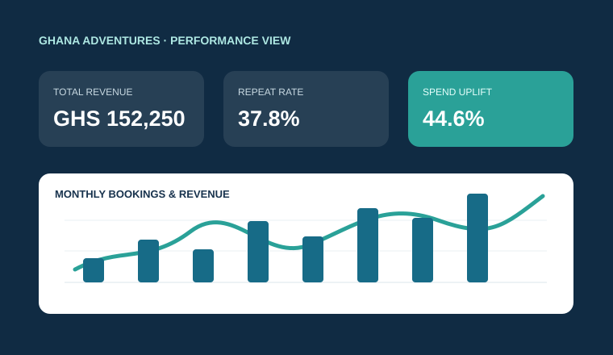
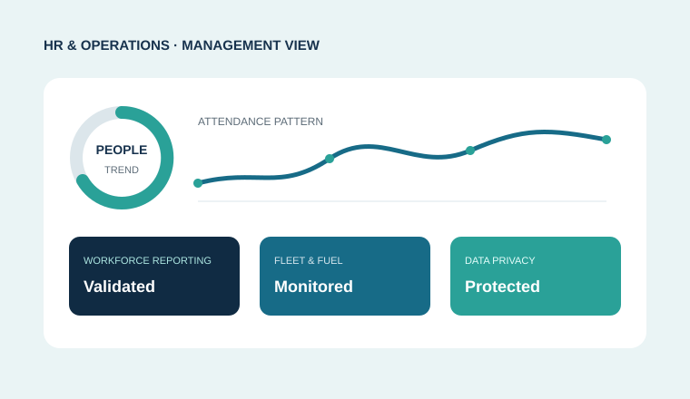
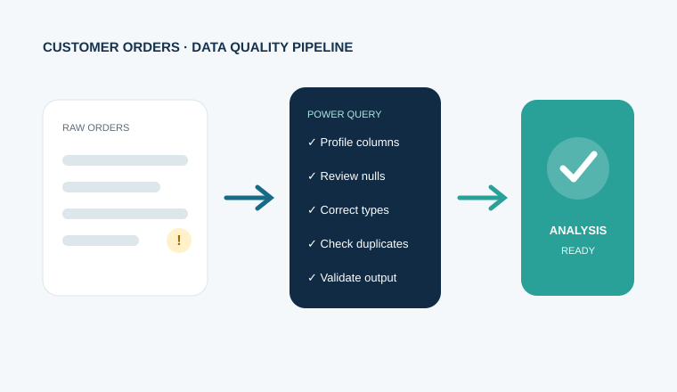
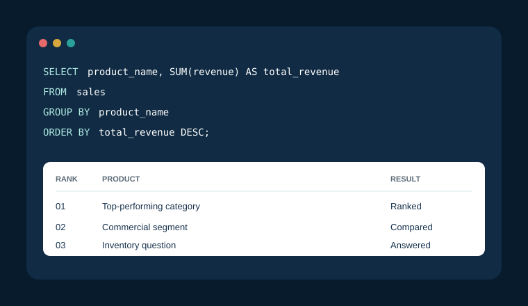
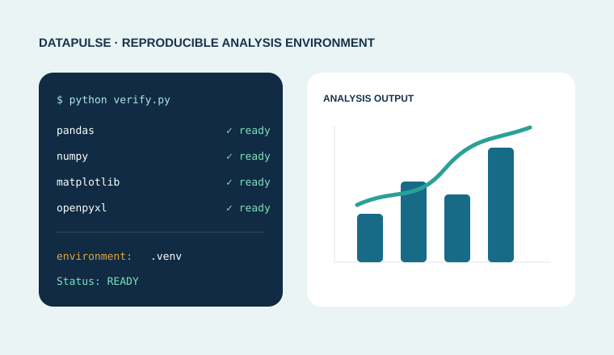

Presentation Design
Professional slide layouts, data storytelling, visual hierarchy and executive-ready presentation materials.
HR · Data Analytics · Graphic Design · Accra, Ghana
I combine real HR and operations experience with data analytics and graphic design to transform raw information and ideas into clear, decision-ready insights and compelling visuals.
 Open to analytics opportunities
Open to analytics opportunities
higher average spend from repeat customers in the Ghana Adventures analysis.
My unique value
Because I understand recruitment, workforce reporting, fleet coordination and day-to-day operations, I do more than build charts. I ask the right questions, test the data carefully and use visual design to communicate actions that managers can understand and use.
Graphic design & visual communication
My graphic design background strengthens how I structure presentations, communicate HR initiatives and turn analytical findings into visuals for different audiences.
Professional slide layouts, data storytelling, visual hierarchy and executive-ready presentation materials.
Staff communications, event artwork, identification materials, email signatures and internal campaign visuals.
Flyers, social-media graphics, banners, brochures and other branded communication assets.
Explore selected corporate event, employee engagement and health communication designs.
View graphic design portfolioTechnical toolkit
My toolkit spans preparation, querying, modelling, visualisation, graphic design and decision communication.
Power Query, data modelling, DAX measures, KPI cards, slicers and executive dashboard storytelling.
Data cleaning, formulas, pivot tables, validation, exploratory analysis and management reporting.
Joins, aggregations, CASE expressions, GROUP BY, HAVING, top-N analysis and business queries.
Pandas, NumPy, Matplotlib, OpenPyXL, virtual environments and reproducible analysis foundations.
Proficient in image editing, photo composition, vector artwork, typography, branded flyers and professional visual layouts.
Selected work
Each project demonstrates a different part of the analytical lifecycle and ends with a practical outcome.

Analysed booking, revenue, seasonality, customer loyalty and channel data to build an evidence-based August–November marketing plan.

Applied data thinking to attendance, satisfaction, attrition, fleet, fuel and maintenance reporting while protecting confidential business information.
Read the case study
Audited nulls, duplicates, field formats and data types, then documented a repeatable Power Query preparation workflow.
Read the case study
Used joins, grouping, HAVING, CASE expressions and top-N queries to turn transactional records into commercial insights.
Read the case study
Built and validated a project-specific environment for analysis using Pandas, NumPy, Matplotlib and OpenPyXL.
Read the case studyMy approach
A consistent workflow keeps the work traceable, accurate and useful to non-technical stakeholders.
Define the decision, audience, constraints and success measures.
Audit structure, clean values, document assumptions and validate types.
Compare patterns, segments and performance against the business question.
Build a focused visual story and recommend actions, risks and next checks.
Professional context
I bring more than technical practice. My background in HR operations, recruitment, onboarding, employee relations, reporting and administration helps me see the people and processes behind the numbers.
Continuous improvement
I welcome specific feedback on the analysis, storytelling, navigation and technical presentation.
Let's connect
I am open to data analytics, business intelligence, people analytics, reporting and graphic design opportunities.